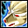
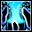
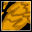
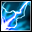

Builds: atributos e habilidades
Quanto pôr em cada atributo e em que ordem subir as habilidades, por classe. Números de pontos tirados da fórmula do servidor.
O que cada atributo faz
| Atributo | Para que serve |
|---|---|
| STR (força) | Ataque corpo a corpo. |
| AGI (agilidade) | Velocidade de ataque e esquiva. |
| ACC (precisão) | Acerto; principal atributo de dano do Sharpshooter. |
| CON (constituição) | HP e defesa. |
| SPR (espírito) | Dano mágico, SP e regeneração de SP. |
Descrições conforme os guias de classe da comunidade (Pirate Kings Online).
Pontos que você ganha
| Nível | Pontos de atributo ganhos | Pontos de habilidade |
|---|---|---|
| 10 | 14 | 1 |
| 20 | 28 | 11 |
| 40 | 56 | 31 |
| 60 | 85 | 51 |
| 80 | 133 | 91 |
| 100 | 181 | 135 |
Fórmula do servidor: cada atributo começa em 5; você ganha +1 ponto por nível, +5 nos níveis múltiplos de 10 e +1 extra por nível do 60 em diante. Habilidade: +1 por nível a partir do 10; do 65 em diante mais 1 (mais 2 nos múltiplos de 5). Cada habilidade vai até o nível 10.
Por classe
Tudo em AGI até ~100 de AGI (lá pelo nível 60, contando o bônus do equipamento); depois tudo em STR.
Atributos (total de cada um, já com os 5 da base)
| Nível | Pontos ganhos | STR | AGI | ACC | CON | SPR |
|---|---|---|---|---|---|---|
| 10 | 14 | 5 | 19 | 5 | 5 | 5 |
| 20 | 28 | 5 | 33 | 5 | 5 | 5 |
| 40 | 56 | 5 | 61 | 5 | 5 | 5 |
| 60 | 85 | 5 | 90 | 5 | 5 | 5 |
| 80 | 133 | 53 | 90 | 5 | 5 | 5 |
| 100 | 181 | 101 | 90 | 5 | 5 | 5 |
Alternativa: Quem prefere bater mais forte desde cedo põe metade em STR depois do 40, mas perde esquiva.
Habilidades — Swordsman (até o 40)
- Illusion Slash — máximo (fecha lá pelo 24)
- Berserk — 5
- Sword Mastery — 3
- Concentration — 2 (10 se só for upar e farmar)
Habilidades — Crusader (do 40 em diante)
- Blood Frenzy — máximo
- Dual Sword Mastery — 2 cedo, 10 depois (mão esquerda de 20% para 100%)
- Deftness — esquiva
- Shadow Slash — atordoa
- Stealth — opcional
Para jogar sozinho, híbrido: 70% STR e 30% CON até o 40, depois metade de cada. Aguenta bosses e ainda bate.
Atributos (total de cada um, já com os 5 da base)
| Nível | Pontos ganhos | STR | AGI | ACC | CON | SPR |
|---|---|---|---|---|---|---|
| 10 | 14 | 15 | 5 | 5 | 9 | 5 |
| 20 | 28 | 25 | 5 | 5 | 13 | 5 |
| 40 | 56 | 44 | 5 | 5 | 22 | 5 |
| 60 | 85 | 59 | 5 | 5 | 36 | 5 |
| 80 | 133 | 83 | 5 | 5 | 60 | 5 |
| 100 | 181 | 107 | 5 | 5 | 84 | 5 |
Alternativa: Dano puro: tudo em STR. Tanque puro: tudo em CON. Dá para trocar a fada (STR ou CON) no meio da luta.
Habilidades — Swordsman (até o 40)
- Illusion Slash — máximo
- Berserk — 5
- Sword Mastery — 3
- Concentration — 2
Habilidades — Champion (do 40 em diante)
- Greatsword Mastery — máximo
- Blood Bull — máximo (HP e defesa)
- Primal Rage — pisão forte, ótimo em boss

Howl — conforme sobrar- Mighty Strike — conforme sobrar
ACC é o atributo principal; um quarto em AGI para não atacar devagar demais. CON quase nada.
Atributos (total de cada um, já com os 5 da base)
| Nível | Pontos ganhos | STR | AGI | ACC | CON | SPR |
|---|---|---|---|---|---|---|
| 10 | 14 | 5 | 8 | 16 | 5 | 5 |
| 20 | 28 | 5 | 12 | 26 | 5 | 5 |
| 40 | 56 | 5 | 19 | 47 | 5 | 5 |
| 60 | 85 | 5 | 26 | 69 | 5 | 5 |
| 80 | 133 | 5 | 38 | 105 | 5 | 5 |
| 100 | 181 | 5 | 50 | 141 | 5 | 5 |
Alternativa: Tanque (tudo em CON) existe, mas o Sharpshooter é o que menos ganha com CON.
Habilidades — Hunter (até o 40)
- Range Mastery — máximo
- Windwalk — velocidade de movimento
- Dual Shot — dano
- Eagle's Eye — conforme sobrar
Habilidades — Sharpshooter (do 40 em diante)
- Firegun Mastery — máximo (com arma de fogo)
- Cripple — reduz esquiva e deixa lento
- Enfeeble — corta habilidades e ataque: essencial em boss
- Headshot — dano
- Magma Bullet — dano
Tudo em SPR até o 60 (dano mágico e SP para o Energy Shield); depois tudo em CON.
Atributos (total de cada um, já com os 5 da base)
| Nível | Pontos ganhos | STR | AGI | ACC | CON | SPR |
|---|---|---|---|---|---|---|
| 10 | 14 | 5 | 5 | 5 | 5 | 19 |
| 20 | 28 | 5 | 5 | 5 | 5 | 33 |
| 40 | 56 | 5 | 5 | 5 | 5 | 61 |
| 60 | 85 | 5 | 5 | 5 | 5 | 90 |
| 80 | 133 | 5 | 5 | 5 | 53 | 90 |
| 100 | 181 | 5 | 5 | 5 | 101 | 90 |
Alternativa: Tanque: metade SPR e metade CON desde o 40, sobrevive mais e mata mais devagar.
Habilidades — Herbalist (até o 40)
- Heal — máximo
- Spiritual Bolt — máximo (dano)
- Recover — conforme sobrar
- Vigor — conforme sobrar
Habilidades — Cleric (do 40 em diante)
- Energy Shield — máximo: o dano vai para o SP
- Greater Heal — máximo

Healing Spring — cura em área- Angelic Shield — defesa
- Revival — 1 basta
CON é o principal (precisa aguentar golpes); um terço em SPR para ter dano.
Atributos (total de cada um, já com os 5 da base)
| Nível | Pontos ganhos | STR | AGI | ACC | CON | SPR |
|---|---|---|---|---|---|---|
| 10 | 14 | 5 | 5 | 5 | 15 | 9 |
| 20 | 28 | 5 | 5 | 5 | 25 | 13 |
| 40 | 56 | 5 | 5 | 5 | 44 | 22 |
| 60 | 85 | 5 | 5 | 5 | 64 | 30 |
| 80 | 133 | 5 | 5 | 5 | 98 | 45 |
| 100 | 181 | 5 | 5 | 5 | 132 | 59 |
Alternativa: Mais dano: metade CON e metade SPR, mas jogando no "bate e corre".
Habilidades — Herbalist (até o 40)
- Heal — máximo
- Spiritual Bolt — máximo
- Recover — conforme sobrar
- Harden — defesa
Habilidades — Seal Master (do 40 em diante)
- Seal of Elder — impede habilidades

Abyss Mire — lentidão- Cursed Fire — reduz defesa
- Shadow Insignia — bloqueia corpo a corpo
- Intense Magic — dano
Tudo em SPR até o 40; depois metade SPR e metade CON (híbrido aguenta mais sozinho).
Atributos (total de cada um, já com os 5 da base)
| Nível | Pontos ganhos | STR | AGI | ACC | CON | SPR |
|---|---|---|---|---|---|---|
| 10 | 14 | 5 | 5 | 5 | 5 | 19 |
| 20 | 28 | 5 | 5 | 5 | 5 | 33 |
| 40 | 56 | 5 | 5 | 5 | 5 | 61 |
| 60 | 85 | 5 | 5 | 5 | 20 | 76 |
| 80 | 133 | 5 | 5 | 5 | 44 | 100 |
| 100 | 181 | 5 | 5 | 5 | 68 | 124 |
Alternativa: Dano puro: tudo em SPR (mata mais rápido, morre mais fácil).
Habilidades — Explorer (até o 40)

Lightning Bolt — máximo (Thunder Coral)- Tornado — atordoa (Wind Coral)
- Conch Armor — defesa
- Diligence — conforme sobrar
Habilidades — Voyager (do 40 em diante)
- Conch Ray — máximo: dano em área (Strike Coral)
- Algae Entanglement — prende
- Whirlpool — dano em área
- Tail Wind — velocidade
Resetar pontos
- Precisa resetar por causa de equipamento? Não. Neste jogo, equipar exige só nível, classe e personagem, nenhum atributo mínimo (conferido no código do servidor).
- Quando vale a pena: trocar de estilo (Champion de dano para tanque, Cleric de dano para tanque), corrigir pontos colocados errado, ou depois de mudar a ideia da build. O Crusader não precisa resetar no 60: é só passar a colocar os pontos novos em STR.
- Como: na Store, aba Reset:
- Book of Stat Reset (300 mil): todos os atributos voltam a 5 e os pontos ficam livres para redistribuir.
- Vial of … Reset x10 (150 mil): tira 10 pontos de um atributo específico.
- Book of Skill Reset (300 mil): devolve os pontos de habilidade.